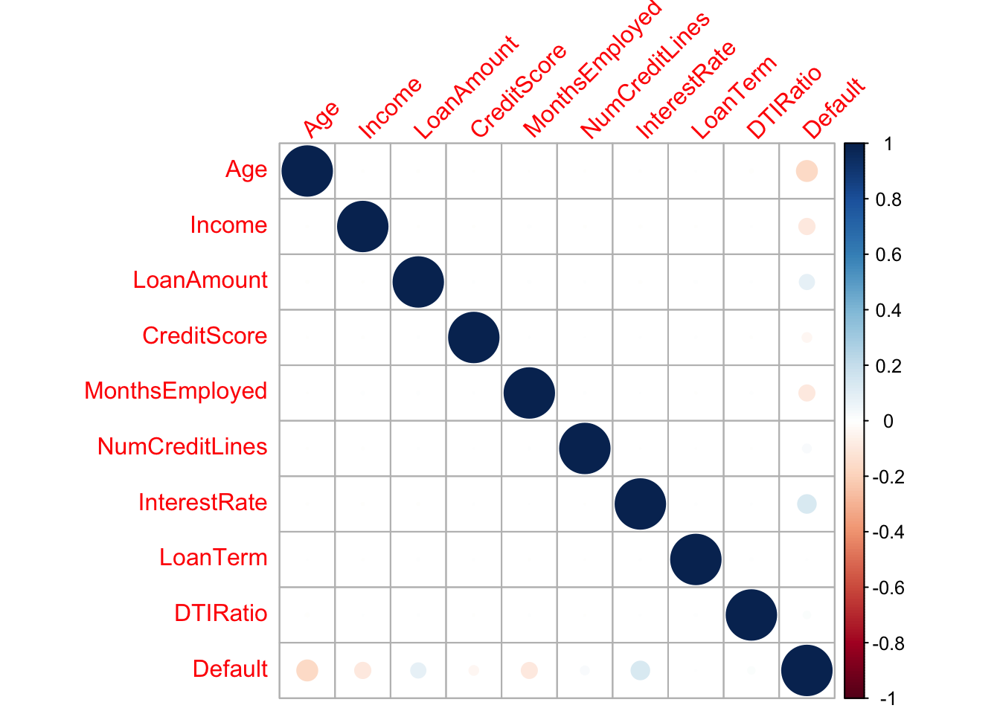
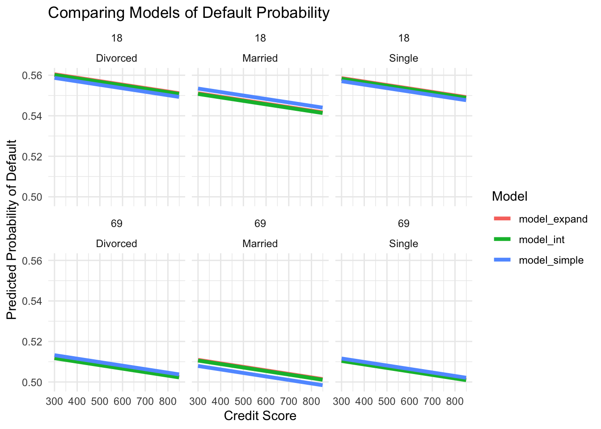

Primary Visualizations
library(tidyverse)── Attaching core tidyverse packages ──────────────────────── tidyverse 2.0.0 ──
✔ dplyr 1.1.2 ✔ readr 2.1.4
✔ forcats 1.0.0 ✔ stringr 1.5.0
✔ ggplot2 3.5.0 ✔ tibble 3.2.1
✔ lubridate 1.9.2 ✔ tidyr 1.3.0
✔ purrr 1.0.2
── Conflicts ────────────────────────────────────────── tidyverse_conflicts() ──
✖ dplyr::filter() masks stats::filter()
✖ dplyr::lag() masks stats::lag()
ℹ Use the conflicted package (<http://conflicted.r-lib.org/>) to force all conflicts to become errorslibrary(broom)
library(GGally)Registered S3 method overwritten by 'GGally':
method from
+.gg ggplot2library(corrplot)corrplot 0.92 loadedlibrary(corrplot)
library(broom)
library(modelr)
Attaching package: 'modelr'
The following object is masked from 'package:broom':
bootstrapdefault <- read_csv('/Users/bensunshine/Documents/SLU_Senior_Year/SP24/data_334/ds334blog/data/Loan_default.csv') %>%
select(-LoanID)Rows: 255347 Columns: 18
── Column specification ────────────────────────────────────────────────────────
Delimiter: ","
chr (8): LoanID, Education, EmploymentType, MaritalStatus, HasMortgage, Has...
dbl (10): Age, Income, LoanAmount, CreditScore, MonthsEmployed, NumCreditLin...
ℹ Use `spec()` to retrieve the full column specification for this data.
ℹ Specify the column types or set `show_col_types = FALSE` to quiet this message.# create a correlation matrix
cor_mat <- cor(default %>% select(-c('Education', 'EmploymentType', 'MaritalStatus',
'HasMortgage', 'HasDependents', 'LoanPurpose', 'HasCoSigner')))
corrplot(cor_mat, tl.srt = 45)
- From the correlation plot above, we can see some of the variables with the highest correlation with Default are Age, InterestRate, Income, MonthsEmployed, and LoanAmount respectively. In my modeling below, I will use some of these variables, as well as some other variables of interest including CreditScore and MaritalStatus.
default_simple_mod <- glm(Default ~ Age + CreditScore + MaritalStatus, data = default)
default_int_mod <- glm(Default ~ Age + MaritalStatus+ MaritalStatus:Age + CreditScore, data = default)
default_expanded_mod <- glm(Default ~ Age + CreditScore + MaritalStatus +
MaritalStatus:Age + I(CreditScore^2), data = default)- In my models I attempt to predict the response variable, Default, using the same variables, but with different feature engineering techniques for each. In the first model, I use Age, CreditScore, and MaritalStatus to predict Default. In my second model I use the same variables, but include and interaction term between MaritalStatus and Age. I did this to account for the possibility that the relationship between Age and Default may differ for individuals with different marital statuses. In my last model, I include both the previous interaction term, as well as squaring the CreditScore variable. Including a quadratic term allows for flexibility in modeling the complexity of CreditScore.
bind_rows(default_simple_mod %>% tidy(), default_int_mod %>% tidy(), default_expanded_mod %>% tidy(), .id = "model")# A tibble: 20 × 6
model term estimate std.error statistic p.value
<chr> <chr> <dbl> <dbl> <dbl> <dbl>
1 1 (Intercept) 0.321 0.00309 104. 0
2 1 Age -0.00359 0.0000417 -86.1 0
3 1 CreditScore -0.0000691 0.00000393 -17.6 3.22e- 69
4 1 MaritalStatusMarried -0.0213 0.00153 -13.9 3.39e- 44
5 1 MaritalStatusSingle -0.00658 0.00153 -4.30 1.72e- 5
6 2 (Intercept) 0.331 0.00402 82.4 0
7 2 Age -0.00382 0.0000723 -52.8 0
8 2 MaritalStatusMarried -0.0498 0.00470 -10.6 3.47e- 26
9 2 MaritalStatusSingle -0.00853 0.00469 -1.82 6.91e- 2
10 2 CreditScore -0.0000691 0.00000393 -17.6 2.90e- 69
11 2 Age:MaritalStatusMarried 0.000653 0.000102 6.40 1.59e- 10
12 2 Age:MaritalStatusSingle 0.0000446 0.000102 0.437 6.62e- 1
13 3 (Intercept) 0.340 0.00934 36.3 1.85e-288
14 3 Age -0.00382 0.0000723 -52.8 0
15 3 CreditScore -0.000101 0.0000320 -3.14 1.67e- 3
16 3 MaritalStatusMarried -0.0498 0.00470 -10.6 3.41e- 26
17 3 MaritalStatusSingle -0.00854 0.00469 -1.82 6.90e- 2
18 3 I(CreditScore^2) 0.0000000274 0.0000000277 0.991 3.22e- 1
19 3 Age:MaritalStatusMarried 0.000653 0.000102 6.40 1.59e- 10
20 3 Age:MaritalStatusSingle 0.0000446 0.000102 0.437 6.62e- 1- In all of the models, Age seems to be the most significant predictor with a p value near zero. For each additional one year increase in age holding all other predictors constant, on average the models predict the odds of default are the predicted odds of default of the previous year of age times 0.996. For the second model with the interaction term interestingly, the odds of default for each additional year of age of a married borrower are higher than that of a single borrower.
simple <- default_simple_mod %>% glance()
interaction <- default_int_mod %>% glance()
expand <- default_expanded_mod %>% glance()
bind_rows(lst(simple, interaction, expand), .id = "model") %>%
arrange(AIC) # A tibble: 3 × 9
model null.deviance df.null logLik AIC BIC deviance df.residual nobs
<chr> <dbl> <int> <dbl> <dbl> <dbl> <dbl> <int> <int>
1 inter… 26209. 255346 -67745. 1.36e5 1.36e5 25415. 255340 255347
2 expand 26209. 255346 -67744. 1.36e5 1.36e5 25415. 255339 255347
3 simple 26209. 255346 -67771. 1.36e5 1.36e5 25421. 255342 255347- Upon comparing these models, the second model, using just the interaction term, proved to be the best of the three due to its relatively lower AIC and BIC.
grid_simple <- default |>
data_grid(
#InterestRate = seq_range(InterestRate, n = 3),
#DTIRatio = seq_range(DTIRatio, n = 2),
CreditScore = seq_range(CreditScore, n= 2),
Age = seq_range(Age, n = 2),
#LoanTerm = seq_range(LoanTerm, n = 3),
# HasMortgage= c("Yes", "No"),
# HasCoSigner = c("Yes", "No"),
MaritalStatus = c("Divorced", "Married", "Single"),
#Income = seq_range(Income, n = 3)
)
grid_int <- default |>
data_grid(
Age = seq_range(Age, n = 2),
MaritalStatus = c("Divorced", "Married", "Single"),
#DTIRatio = seq_range(DTIRatio, n = 2),
CreditScore = seq_range(CreditScore, n= 2)#,
#InterestRate = seq_range(InterestRate, n = 3),
#LoanTerm = seq_range(LoanTerm, n = 3),
# HasMortgage= c("Yes", "No"),
#Income = seq_range(Income, n = 3)
)
grid_expand <- default |>
data_grid(
#Income = seq_range(Income, n = 3),
Age = seq_range(Age, n = 2),
MaritalStatus = c("Divorced", "Married", "Single"),
#DTIRatio = seq_range(DTIRatio, n = 2),
CreditScore = seq_range(CreditScore, n = 2)#,
#InterestRate = seq_range(InterestRate, n = 3),
#LoanTerm = seq_range(LoanTerm, n = 3),
# HasMortgage= c("Yes", "No"),
# HasCoSigner = c("Yes", "No")
) model_simple <- augment(default_simple_mod, newdata = grid_simple, interval = "confidence") %>%
mutate(pred_prob = exp(.fitted)/(1+exp(.fitted)))
model_int <- augment(default_int_mod, newdata = grid_int, interval = "confidence") %>%
mutate(pred_prob = exp(.fitted)/(1+exp(.fitted)))
model_expand <- augment(default_expanded_mod, newdata = grid_expand, interval = "confidence") %>%
mutate(pred_prob = exp(.fitted)/(1+exp(.fitted)))
plot_df <- bind_rows(lst(model_simple, model_int, model_expand), .id = "model")ggplot(plot_df,
aes(x = CreditScore, y = pred_prob)) +
geom_line(aes(color = as.factor(model)),
linewidth = 1.5) +
facet_wrap(Age~MaritalStatus) +
labs(x = "Credit Score", y = "Predicted Probability of Default",
title = "Comparing Models of Default Probability",
color = "Model") +
theme(axis.title.x = element_text(hjust = 0.5)) +
theme_minimal()
- From the plot above, it can be seen the slope of each model despite the marital status or age is consistent. What varies is the y intercept for each. It can be seen the group at highest risk of loan default is young divorced borrowers with lower credit scores. The next group would be single young borrowers with lower credit scores. Interestingly, regardless of marital status, older borrowers with low credit scores have a predicted lower probability of default than young borrowers with excellent credit.